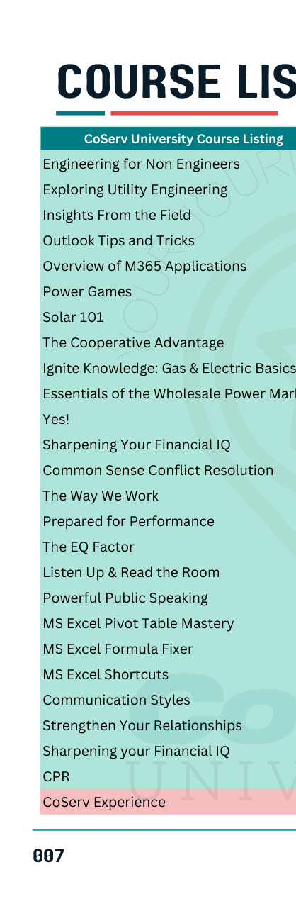
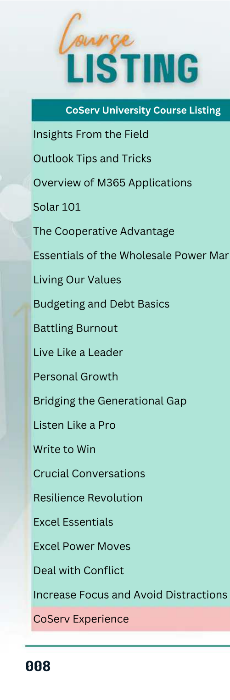
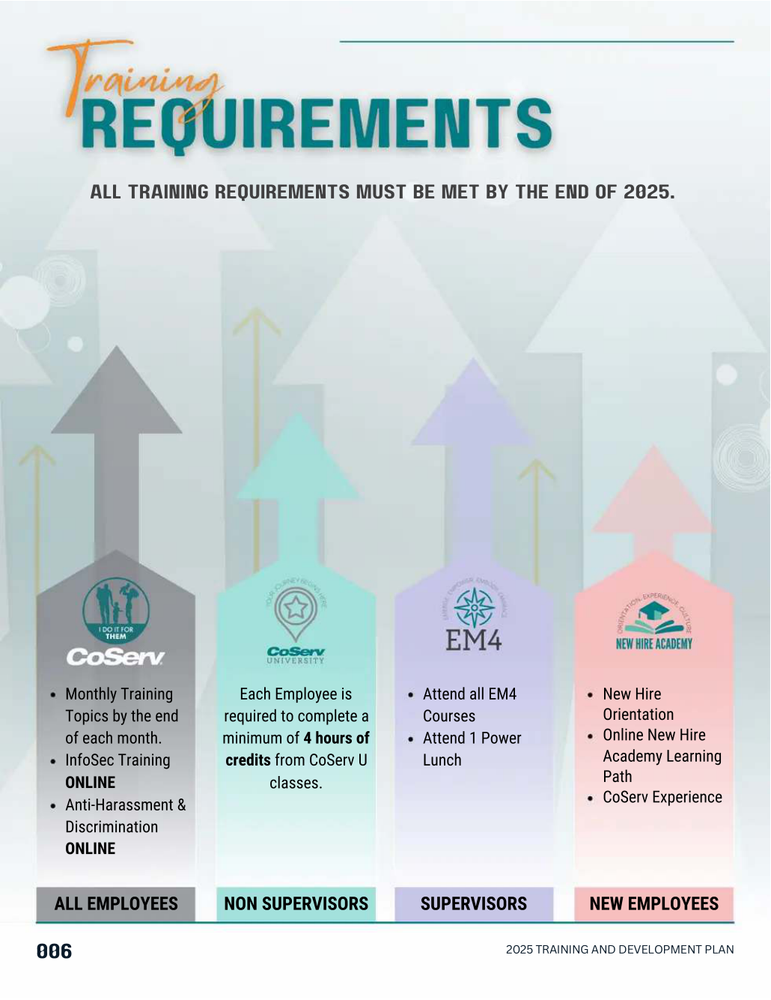
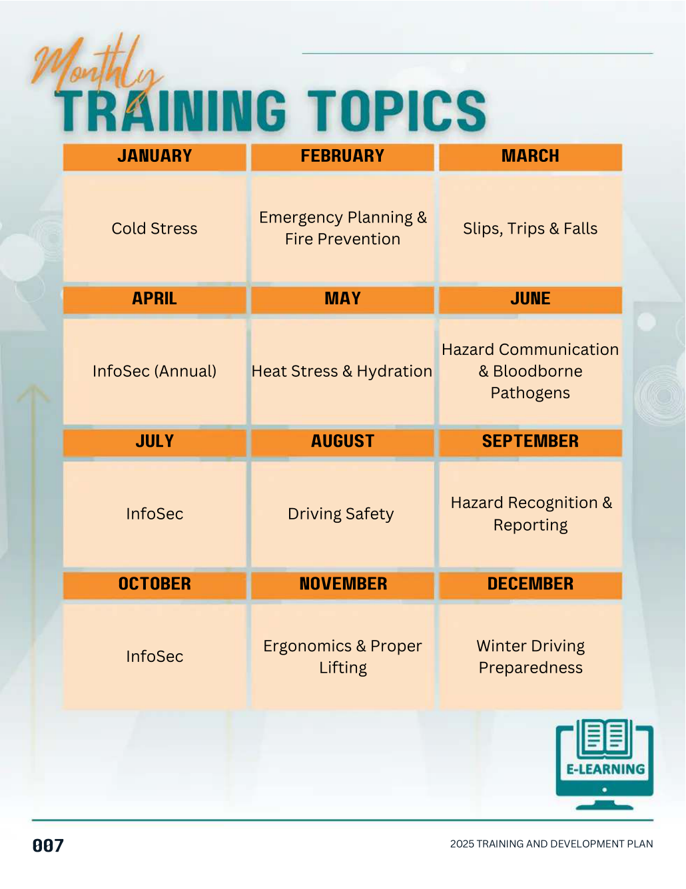
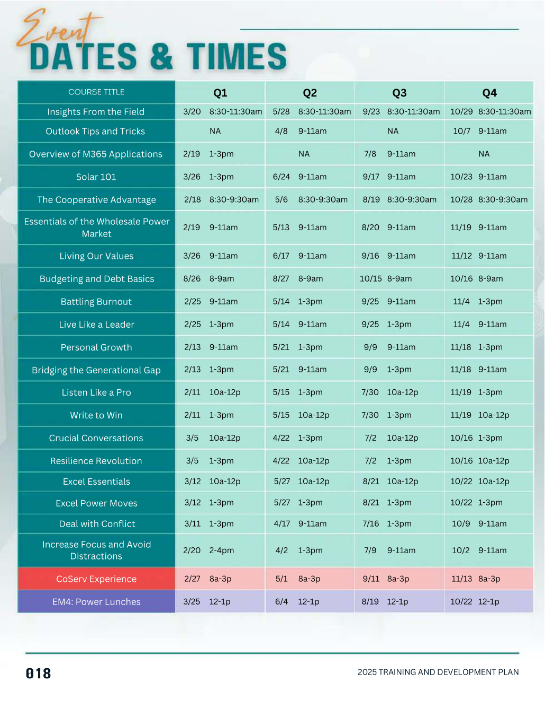

Understand the work.
Use everyday relationships and conversations to recognize needs that may never appear on a training request.
How conversations with the people doing the work, leadership input, and deliberate instructor partnerships shaped a more relevant learning program.
CoServ already had a well-established learning program. The annual catalog documented what was available, when it was offered, and how employees could meet their requirements. I wasn't building that infrastructure from scratch.
But a catalog can be complete without being particularly useful. And a training program can be busy without addressing what people are actually experiencing at work.
I wanted to understand what employees needed, not just what courses we could offer.
That meant paying attention to feedback from employees and leaders at different levels, looking for recurring needs, and considering the cultural challenges that learning could help people navigate.
My experience across utility operations, technical work, safety, military leadership, and workforce development gave me a way to connect with employees beyond a formal training request. I could talk with people about the work itself, not just about what course they wanted to take.
Through informal conversations and working relationships with frontline employees and leaders, I listened for recurring concerns: burnout, communication, conflict, accountability, and how people experienced leadership. Separately, I used structured surveys to help prioritize learning topics with leadership.
Use everyday relationships and conversations to recognize needs that may never appear on a training request.
Combine what employees were experiencing with structured leadership input on development priorities.
Work with instructors and use class questions, participant surveys, and current events to revisit the material.
For externally facilitated courses, I interviewed and selected instructors for their expertise and their willingness to tailor the material. I collaborated on their initial content and continued evaluating it after delivery. I did not independently author those courses.
This describes my approach and responsibilities. The catalog does not establish measurable changes in culture or learning transfer.
Some offerings addressed recurring cultural concerns. Others reinforced a shared foundation during rapid growth or helped employees build practical skills they could use immediately. My contribution varied by course, from proposing and outlining an initiative to recruiting instructors, collaborating on content, and evaluating delivery.
I developed the initial outline around CoServ's established values: Accountability, Integrity, Respect, Service, Excellence, and Safety. I recruited the Chief of Operations to facilitate the course, aiming to reinforce a shared cultural foundation as the employee base grew.
I conceived a two-level learning opportunity: build confidence with everyday Excel tasks, then progress to more advanced tools that could make employees' daily work more efficient. The catalog specifies Essentials as a prerequisite for Power Moves.
Development opportunities chosen to address strain, personal influence, responsibility, and the effect of workplace behaviors on teams.
Opportunities to strengthen everyday listening, clarity, and communication across roles and relationships.
Topics intended to support adaptability, understanding different perspectives, and collaboration.
Practice-oriented topics for navigating difficult conversations and responding to challenges more constructively.
For instructor-led offerings, my role included interviewing and selecting facilitators, aligning their content to our context, and using participant questions, feedback surveys, and emerging issues to inform adjustments over time. Course delivery was collaborative, not solely my authorship.


The course lineup was one part of the work. The other was making the information easier to navigate. I approached the 2025 catalog as a decision-making resource, not simply a document that needed to exist.

Organizing requirements by audience helps employees identify which expectations apply to them without first decoding the whole program.

The monthly topic grid gives employees a quick way to understand the learning rhythm across the year.

A consolidated schedule answers a different question from the course descriptions: when an opportunity fits into the employee's workday.
The course-description pages also included consistent title, credit, schedule, description, and Key Takeaways patterns to make the value of a course easier to recognize. Those pages aren't reproduced here because they contain instructor-identifying information.
My initial concept included additional middle-management and leadership-development offerings. Some were removed from the final version because they weren't available to every employee. I adapted the published plan to the direction I was given.
That doesn't diminish the intent behind the work. It reflects a familiar reality of organizational design: useful ideas have to move through stakeholder decisions, operational limits, and competing priorities.
These selected pages illustrate the information architecture of the 2025 catalog. Instructor names and the source PDFs are intentionally not published.
Portfolio excerpts only. No original PDF is served from this page. Displayed images may still be captured or printed by visitors.
I wouldn't measure the value of this work solely by course attendance or completion. I'd want to know whether employees found the opportunities relevant, whether the learning was applied, and whether it supported healthier, more effective ways of working.
Those outcomes aren't established by the catalogs alone. What the artifacts do show is a shift in offerings and a deliberate attempt to connect employee needs, leadership perspectives, and learning design.
How much work are we making the employee do just to understand what we're offering?